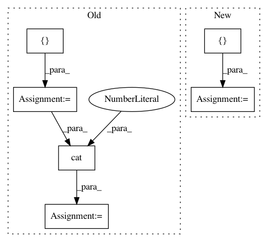

a6667bf98c59a7447a6bc55869459e83f5bdb603,dnc/sparse_memory.py,SparseMemory,read_from_sparse_memory,#SparseMemory#Any#Any#Any#Any#Any#,185
Before Change
def read_from_sparse_memory(self, memory, indexes, keys, last_used_mem, usage):
b = keys.size(0)
read_positions = []
read_weights = []
// print(keys.squeeze())
// non-differentiable operations
for batch in range(b):
distances, positions = indexes[batch].search(keys[batch])
read_weights.append(distances)
read_positions.append(T.clamp(positions, 0, self.mem_size - 1))
// add least used mem to read positions
read_positions = T.stack(read_positions, 0)
// TODO: explore possibility of reading co-locations and such
// if read_collocations:
// read the previous and the next memory locations
// read_positions = T.cat([read_positions, read_positions-1, read_positions+1], -1)
read_positions = var(read_positions)
read_positions = T.cat([read_positions, last_used_mem.unsqueeze(1)], 2)
// print(read_positions.squeeze())
// add weight of 0 for least used mem block
read_weights = T.stack(read_weights, 0)
new_block = read_weights.new(b, 1, 1)
new_block.fill_(δ)
read_weights = T.cat([read_weights, new_block], 2)
read_weights = var(read_weights)
// condition read weights by their usages
relevant_usages = usage.gather(1, read_positions.squeeze())
read_weights = (read_weights.squeeze(1) * relevant_usages).unsqueeze(1)
(b, m, w) = memory.size()
read_vectors = memory.gather(1, read_positions.squeeze().unsqueeze(2).expand(b, self.K+1, w))
After Change
// TODO: explore possibility of reading co-locations or ranges and such
(b, r, k) = read_positions.size()
read_positions = var(read_positions)
read_positions = T.cat([read_positions.view(b, -1), last_used_mem], 1)
(b, m, w) = memory.size()
visible_memory = memory.gather(1, read_positions.unsqueeze(2).expand(b, r*k+1, w))
read_weights = F.softmax(θ(visible_memory, keys), dim=2)
read_vectors = T.bmm(read_weights, visible_memory)
return read_vectors, read_positions, read_weights, visible_memory
In pattern: SUPERPATTERN
Frequency: 4
Non-data size: 6
Instances
Project Name: ixaxaar/pytorch-dnc
Commit Name: a6667bf98c59a7447a6bc55869459e83f5bdb603
Time: 2017-12-07
Author: root@ixaxaar.in
File Name: dnc/sparse_memory.py
Class Name: SparseMemory
Method Name: read_from_sparse_memory
Project Name: eriklindernoren/PyTorch-YOLOv3
Commit Name: 9b0a0dd6fe7b4ac021d91acc6b4f96b403dd6b67
Time: 2019-04-26
Author: eriklindernoren@live.se
File Name: models.py
Class Name: Darknet
Method Name: forward
Project Name: HyperGAN/HyperGAN
Commit Name: 84c0cd80f13df87c1b8e5f547a9b77a490a874b1
Time: 2020-08-09
Author: martyn@255bits.com
File Name: hypergan/samplers/factorization_batch_walk_sampler.py
Class Name: FactorizationBatchWalkSampler
Method Name: __init__
Project Name: interactiveaudiolab/nussl
Commit Name: e7b29c20004bc520b202fea982b8db4c760fc822
Time: 2020-08-06
Author: prem@u.northwestern.edu
File Name: tests/ml/test_loss.py
Class Name:
Method Name: test_permutation_invariant_loss_tf